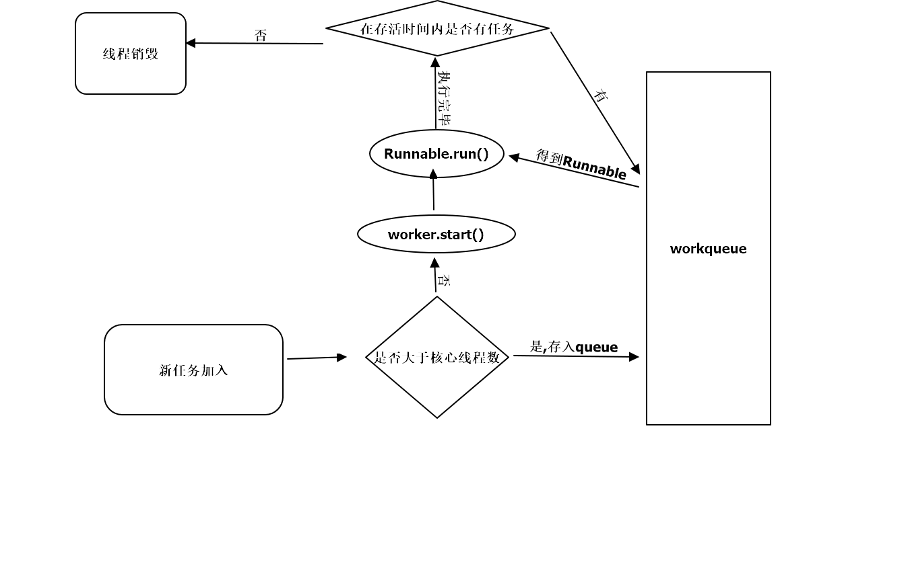

本节的主题是Android中的线程和线程池。线程在Android中是一个很重要的概念，从用途上来说,线程主要分为主线程和子线程，主线程主要处理和界面相关的事情，而子线程往往用于耗时操作。由于Android的特性，如果在主线程中执行耗时操作那么就会导致程序无法及时的相应，因此耗时操作必须放在子线程中去执行。除了Thread本身以外，在Android中可以扮演线程角色的还有很多，比如AsyncTask和IntentService，同时HandlerThread也是一种特殊的线程。尽管AsyncTask、IntentService以及HandlerThread的表现形式都有别于传统的线程，但是他们的本质任然是传统的线程。对于AsyncTask来说，他的底层使用到线程池，对于IntentService和HandlerThread来说，他们的底层直接使用了线程。
不同形式的线程虽然都是线程，但是他们任然具有不同的特性和使用场景。AsyncTask封装了线程池和Handler，他主要是为了方便开发者在子线程中更新UI。HandlerThread是一种具有消息循环的线程，在他的内部可以使用Handler。IntentService是一个服务，系统对其进行了封装使其可以更方便的执行后台任务，IntentService内部采用HandlerThread来执行任务，当任务执行完毕后IntentService会自动退出。从任务执行的角度来看，IntentService的作用更像是一个后台线程，但是IntentService是一种服务，他不容易被系统杀死从而尽量保证任务的执行，而如果是一个后台线程，由于这个进程中没有活动的四大组件，那么这个进程的优先级会非常低，很容易被系统杀死，这就是IntentService的优点。
在操作系统中，线程是操作系统调度的最小单元，同时线程又是一种受限的系统资源，即线程不可能无限制的产生，并且线程的创建和销毁都会有相应的开销。当系统中存在大量线程时，系统会通过时间片轮转的方式调度每个线程，因此线程不可能做到绝对的秉性，除非线程数量小于等于CPU核心数，一般来说这个是不可能的。想象一下，如果一个进程中频繁的创建和销毁线程，这显然不是高效的做法。正确的做法是采用线程池，一个线程池中会缓存一定数量的线程，通过线程池就可以避免因为频繁创建和销毁线程而带来的系统开销。Android中的线程池来源于java，主要是通过Executor来派生特定类型的线程池，不同种类的线程池又具有各自的特性，详细内容会在后面介绍。
主线程和子线程
主线程是指进程所拥有的线程，在java中默认情况下一个进程只有一个线程，这个线程就是主线程，主线程主要负责界面的交互相关逻辑，因为用户随时会和界面发生交互，因此主线程在任何时候都必须有较高的响应速度，否则就会产生一种界面卡顿的感觉。为了保持较高的响应速度，这就要求主线程中不能执行耗时任务，否则就会产生一种界面卡顿的感觉。为了保持较高的响应速度，这就要求主线程中不能执行耗时任务。这个时候子线程就派上用场了。子线程也叫工作线程，除了主线程以外的线程都是子线程。
Android沿用了java的线程模型，其中的线程也分为主线程和子线程，其中主线程也叫UI线程。主线程的作用是运行四大组件以及处理他们与用户的交互，而子线程的作用则是执行耗时操作，比如IO，网络等。Android从3.0开始系统要求网络访问必须在子线程中进行，不然就会抛出NetWorkOnMainThreadException这个异常，这样做是为了避免主线程由于被耗时操作所阻塞从而出现ANR现象。
Android中线程形态
本节对Android中的线程形态做了一个全面的介绍，处理传统的Thread以外，还包含AsyncTask、HanderThread以及IntentService，这三者的底层实现也是狭隘难成，但是他们具有特殊的表现形式，同时在使用上也各有优缺点。为了简化子线程中访问UI的过程，系统提供了AsyncTask，AsyncTask经过几次修改，导致了对于不同的APi版本AsyncTask具有不同的表现形式，尤其是多任务并发执行上面。这里讲介绍AsyncTask的使用注意事项
AsyncTask
AsyncTask是一种轻量级的异步任务类，他可以在线程池中执行后台任务，然后把执行的进度和最终结果传递给主线程并在UI线程中更新UI。从实现上来说AsyncTask封装了Handler和Thread，通过AsyncTask可以更加方便的执行后台任务以及主线程中访问UI ，但是AsyncTask并不适合进行特别耗时的后台任务，对于特别耗时的任务来说，建议使用线程池。
AsyncTask是一个抽象的泛型类1
public abstract class AsyncTask<Params, Progress, Result> {...}
来解释一下这三个泛型的意思
- Params：是参数类型
- Progress：是任务进度类型
- Result：是返回结果类型
如果不需要传递具体的参数类型，可以用Void类型来替代
看一下这一个例子
1 | public class TestAsy extends AsyncTask<URL, Integer, Long> { |
AsyncTas提供了五个核心的方法，他们的含义如下所示
| 方法名 | 含义 |
|---|---|
| onPreExecute | 在主线程中执行，在异步任务执行之前，此方法会被调用，一般可以用于一些准备工作 |
| doInBackground | 在线程池中执行，此方法用于执行异步任务，params参数表示异步任务输入的参数。此方法中可以通过publishProgress来更新任务进度，publishProgress会调用onProgressUpdate方法,此外此方法需要返回计算结果给onPostExecute |
| onProgressUpdate | 在主线程中执行，当后台任务的执行进度发生改变是调用次方法 |
| onPostExecute | 在主线程中执行，在异步任务执行后，此方法会被调用，其中result参数是后台任务的返回值，即doInbackGround的返回类型 |
| onCancelled | 在取消任务是，调用cancel()后，在doInBackground（）return后 我们将会调用onCancelled(Object) 不在调用onPostExecute(Object) |
然后可以使用如下方式来启动任务
1 | new TestAsy().execute(url1,url2) |
在doInBackground中要判断具体任务是否被取消，当下载完成后，doInBackground会返回结果，下载的大小。
这里有一些注意点
- AsyncTask的类必须在主线程中加载，这就意味着第一次访问AsyncTask必须发生在主线程，当然这个过程在Android4.1及以上版本已经被系统自动完成。在Android5.0的源码中，可以查看ActivityThrad的main方法，他会调用AsyncTask的init方法，这就满足了AsyncTask类必须在主线程中加载的这个条件。
- AsyncTask对象必须在主线程中创建
- execute方法必须在UI线程调用
- 不要在程序中直接调用onPreExecute、doInBackground、onProgressUpdate、onPostExecute
- 一个AsyncTask对象只能执行一次，即只能调用一次execute方法，否则会报运行时异常
- 在Android1.6以前，AsyncTask是串行执行任务的，在Android1.6的时候AsyncTask开始采用线程池并行处理任务，但是从Android3.0开始，为了避免所带来的并发错误，AsyncTask又采用了一个线程串行执行任务。尽管如此，在Android3.0以后的版本中，我们可以使用AsyncTask的executeOnExecutor方法来并行执行任务
AsyncTask的工作原理
前提 :这里是AsyncTask的构造方法，对mWorker和mFuture进行赋值，并将mWorker传递给mFuture,这两个变量后面会使用1
2
3
4
5
6
7
8
9
10
11
12
13
14
15
16
17
18
19
20
21
22
23
24
25
26
27
28
29
30
31
32
33
34
35
36
37
38
39
40public AsyncTask(@Nullable Looper callbackLooper) {
mHandler = callbackLooper == null || callbackLooper == Looper.getMainLooper()
? getMainHandler()
: new Handler(callbackLooper);
mWorker = new WorkerRunnable<Params, Result>() {
public Result call() throws Exception {
mTaskInvoked.set(true);
Result result = null;
try {
Process.setThreadPriority(Process.THREAD_PRIORITY_BACKGROUND);
//noinspection unchecked
result = doInBackground(mParams);
Binder.flushPendingCommands();
} catch (Throwable tr) {
mCancelled.set(true);
throw tr;
} finally {
postResult(result);
}
return result;
}
};
mFuture = new FutureTask<Result>(mWorker) {
@Override
protected void done() {
try {
postResultIfNotInvoked(get());
} catch (InterruptedException e) {
android.util.Log.w(LOG_TAG, e);
} catch (ExecutionException e) {
throw new RuntimeException("An error occurred while executing doInBackground()",
e.getCause());
} catch (CancellationException e) {
postResultIfNotInvoked(null);
}
}
};
}
为了分析AsyncTask的工作原理，我们从它的execute方法开始分析，execute方法又会调用executeOnExecutor方法，他们的实现如下所示。1
new AsyncTask().execute(url1,url2)
AsyncTask的execute方法1
2
3
4@MainThread
public final AsyncTask<Params, Progress, Result> execute(Params... params) {
return executeOnExecutor(sDefaultExecutor, params);
}
1 | @MainThread |
上面的代码中exec是一个线程池SerialExecutor，下面给出这个线程池的定义。一个进程中所有的AsyncTask全部在这个串行的线程池中排队执行，这个排队执行的过程后面会在进行分析。在executeOnExecutor方法中，AsyncTask的onPreExecute方法最先执行，注意@MainThread,这个是一个主线程的注解：https://developer.android.com/studio/write/annotations?hl=zh-cn 可以去了解一下android的注解。然后将参数传递给mWorker，而mWorker在刚刚分析的构造方法中，赋值并和mFuture绑定，
mFuture是一个FutureTask,实现了runnable接口
最后我们来分析一下这个线程池。看一下execute执行的过程1
2
3
4
5
6
7
8
9
10
11
12
13
14
15
16
17
18
19
20
21
22
23
24
25
26
27public static final Executor SERIAL_EXECUTOR = new SerialExecutor();
private static class SerialExecutor implements Executor {
final ArrayDeque<Runnable> mTasks = new ArrayDeque<Runnable>();
Runnable mActive;
public synchronized void execute(final Runnable r) {
mTasks.offer(new Runnable() {
public void run() {
try {
r.run();
} finally {
scheduleNext();
}
}
});
if (mActive == null) {
scheduleNext();
}
}
protected synchronized void scheduleNext() {
if ((mActive = mTasks.poll()) != null) {
THREAD_POOL_EXECUTOR.execute(mActive);
}
}
}
ArrayDeque是一个链表，offer方法将数据插入链表尾部，如果这个时候AsyncTask中没有正在执行的线程，就会执行scheduleNext方法，否则等待，我们看一下scheduleNext方法，他调用ArrayDeque的poll方法，将第一个数据移出，并返回该数据，这个时候mActive就是最先插入的任务，这个时候会调用THREAD_POOL_EXECUTOR的execute方法，而THREAD_POOL_EXECUTOR也是一个线程池，我们看一下ArrayDeque在插入数据的时候，新建了一个runnable，并在任务执行完毕后调用了scheduleNext方法，这样就可以不断的遍历ArrayDeque，直到任务执行完毕。现在看一下THREAD_POOL_EXECUTOR。1
2
3
4
5
6
7
8
9
10
11
12
13
14
15
16
17
18
19
20
21
22
23
24
25
26
27
28
29
30
31
32定义
private static final int CORE_POOL_SIZE = Math.max(2, Math.min(CPU_COUNT - 1, 4));与Cpu核心数相关
private static final int MAXIMUM_POOL_SIZE = CPU_COUNT * 2 + 1;与Cpu核心数相关
private static final int KEEP_ALIVE_SECONDS = 30;
private static final BlockingQueue<Runnable> sPoolWorkQueue =
new LinkedBlockingQueue<Runnable>(128);
private static final ThreadFactory sThreadFactory = new ThreadFactory() {
private final AtomicInteger mCount = new AtomicInteger(1);
public Thread newThread(Runnable r) {
return new Thread(r, "AsyncTask #" + mCount.getAndIncrement());
}
};
private static final RejectedExecutionHandler defaultHandler =
new AbortPolicy();//这个是默认的一个参数
---------------------------------------------------------------------------------------------------------
static {
ThreadPoolExecutor threadPoolExecutor = new ThreadPoolExecutor(
CORE_POOL_SIZE, MAXIMUM_POOL_SIZE, KEEP_ALIVE_SECONDS, TimeUnit.SECONDS,
sPoolWorkQueue, sThreadFactory);
threadPoolExecutor.allowCoreThreadTimeOut(true);
THREAD_POOL_EXECUTOR = threadPoolExecutor;
}
构造方法内部又加了一个参数defaultHandler
public ThreadPoolExecutor(int corePoolSize,
int maximumPoolSize,
long keepAliveTime,
TimeUnit unit,
BlockingQueue<Runnable> workQueue,
ThreadFactory threadFactory) {
this(corePoolSize, maximumPoolSize, keepAliveTime, unit, workQueue,
threadFactory, defaultHandler);
}
THREAD_POOL_EXECUTOR是在静态代码块中赋值的，我们来看一下这个创建的方法，里面有几个关键的参数
- corePoolSize:核心线程数，默认情况下核心线程会一直存活，即使处于闲置状态也不会受存keepAliveTime限制。除非将allowCoreThreadTimeOut设置为true。
- maximumPoolSize:线程池所能容纳的最大线程数。超过这个数的线程将被阻塞。当任务队列为没有设置大小的LinkedBlockingDeque时，这个值无效。
- keepAliveTime:非核心线程的闲置超时时间，超过这个时间就会被回收。
- unit:指定keepAliveTime的单位，如TimeUnit.SECONDS。当将allowCoreThreadTimeOut设置为true时对corePoolSize生效。
- workQueue:线程池中的任务队列。常用的有三种队列，SynchronousQueue,LinkedBlockingDeque,ArrayBlockingQueue。
- threadFactory:线程工厂，提供创建新线程的功能。ThreadFactory是一个接口，只有一个方法
- RejectedExecutionHandler:RejectedExecutionHandler也是一个接口，只有一个方法。是任务拒绝处理器
RejectedExecutionHandler的更多信息
两种情况会拒绝处理任务：
当线程数已经达到maxPoolSize，切队列已满，会拒绝新任务
当线程池被调用shutdown()后，会等待线程池里的任务执行完毕，再shutdown。如果在调用shutdown()和线程池真正shutdown之间提交任务，会拒绝新任务
线程池会调用rejectedExecutionHandler来处理这个任务。如果没有设置默认是AbortPolicy，会抛出异常
ThreadPoolExecutor类有几个内部实现类来处理这类情况：
AbortPolicy 丢弃任务，抛运行时异常
CallerRunsPolicy 执行任务
DiscardPolicy 忽视，什么都不会发生
DiscardOldestPolicy 从队列中踢出最先进入队列（最后一个执行）的任务
实现RejectedExecutionHandler接口，可自定义处理器
现在来看一下线程池的执行过程:
- 当线程数小于核心线程数时，创建线程。
- 当线程数大于等于核心线程数，且任务队列未满时，将任务放入任务队列。
- 当线程数大于等于核心线程数，且任务队列已满
- 若线程数小于最大线程数，创建线程
- 若线程数等于最大线程数，抛出异常，拒绝任务
可以看到上面的信息，最终调用了THREAD_POOL_EXECUTOR.execute(mActive);这个方法，而execute会调用runnable的run()方法，由于mActive是之前包装的FutureTask，并且还有mWork，而mWork是一个Callable对象，runnable的run()方法先调用mWor的call（）方法，再调用FutureTask的done方法。这里可以看一下FutureTask的源码。
这里可以在看一下mwork1
2
3
4
5
6
7
8
9
10
11
12
13
14
15
16
17
18mWorker = new WorkerRunnable<Params, Result>() {
public Result call() throws Exception {
mTaskInvoked.set(true);
Result result = null;
try {
Process.setThreadPriority(Process.THREAD_PRIORITY_BACKGROUND);
//noinspection unchecked
result = doInBackground(mParams);
Binder.flushPendingCommands();
} catch (Throwable tr) {
mCancelled.set(true);
throw tr;
} finally {
postResult(result);
}
return result;
}
};
在WorkerRunnable的call()方法中会调用doInBackground方法，这个就是AsyncTask的耗时操作方法。
得到结果之后调用postResult方法
1 | private Result postResult(Result result) { |
这里使用了Handler来发送一条MESSAGE_POST_RESULT消息和结果
这个Handler的定义如下
1 | private static class InternalHandler extends Handler { |
可以发现在收到任务执行完毕的通知后，handler会执行AsyncTaskResult的finish（）方法
1 | private void finish(Result result) { |
onPostExecute这个方法就是在这里调用的,onCancelled的回调也在这里，两个只能调用一个。
这样AsyncTask的整个调用流程就分析完毕了
这里要注意一下AsyncTask的不同版本的串行和并行的问题，如果是4.1之上的版本，默认AsyncTask是串行的，如果想要并行，要使用executeOnExecutor()
HandlerThread
HandlerThread是继承字Thread，他是一种可以使用Handler的Thread，他的实现也很简单，就是在run方法中通过Looper.prepare()来创建消息队列，并通过Looper.loop()来开启消息循环，这样在实际的使用中就荀彧在HandlerThread中创建Handler了。HandlerThread的run()方法如下所示。
1 | @Override |
这样在子线程中就可以创建Handler，主线程持有这个handler就可以给子线程发送消息。从HandlerThread的实现来看，他和普通的Thread又显著的不同之处。普通Thread主要在run方法中执行一个耗时任务，而HandlerThread在内部创建了消息队列，外界需要通过Handler的消息方式来通知HandlerThread执行一个具体的任务。HandlerThread是一个很有用的类，他在ANdroid中有一个具体的使用场景是IntentService，IntentService将在后面介绍。由于HandlerThread的run方法是一个无线循环，因此当明确不需要再使用HandlerThread时，可以通过他的quit或者quitSafely方法来终止线程的执行，这时一个良好的变成习惯，防止内存泄漏。
IntentService
IntentService是一种特殊的Service，他继承了Service并且他是一个抽象类，因此必须创建他的子类才能使用IntentService。IntentService可用于执行后台耗时任务，当任务执行完毕后会自动停止，同时由于IntentService是服务的原因，这导致他的优先级比单纯的线程任务要高很多，所以IntentService比较适合执行一些高优先级的后台任务，因为他优先级高不容易被系统杀死。在实现上，IntentService封装了HandlerThread和Handler，这一点可以从他的onCreate方法中看出来。
1 | @Override |
当IntentService第一次启动时，他的onCreate方法会被调用，onCreate方法会创建一个HandlerThread，然后使用他的Looper来构造一个Handler对象mServiceHandler，这样通过mServiceHandler发送的消息最终都会在HandlerThread中执行，从这个角度来看，IntentService也可以用于执行后台任务。每次启动IntentService，他的onStartCommand方法就会调用一次，IntentService在onStartCommand中处理每个后台任务的Intent。下面看一下onStartCommand方法是如何处理外界的Intent的，onStartCommand调用了onStart，onStart的实现方法如下所示。1
2
3
4
5
6
7@Override
public void onStart(@Nullable Intent intent, int startId) {
Message msg = mServiceHandler.obtainMessage();
msg.arg1 = startId;
msg.obj = intent;
mServiceHandler.sendMessage(msg);
}
可以看出，IntentService仅仅是通过mServiceHandler发送了一条消息，这条消息会在HandlerThread中被处理。mServiceHandler收到消息后，会将Intent对象传递给onHandleIntent方法来处理。注意这个Intent对象的内容和外界的startService(Intent)中的Intent内容是完全一致的,通过这个Intent对象即可解析出外界启动IntentService时所传递的参数，通过这些参数就可以区分具体的后台任务，这样在onHandlerIntent方法中就可以对不同的后台任务做处理了。当onHandleIntent方法执行结束后，IntentService会通过stopSelf(int startId)方法来尝试停止服务。这里所采用stopSelf(int startId)而不是stopSelf()来停止服务，那是因为stopSelf()会立刻停止服务，而这个时间可能还有其他的消息未处理，stopSelf(int startId)会等待所有的消息都处理外才终止服务。一般来说，stopSelf(int startId)在停止服务之前会判断最近启动的服务次数是否与startId相等，如果相等就立刻停止服务，不相等则不停止服务，这个策略可以从AMS的stopServiceToken方法的实现找到依据。可以自己看一下。ServiceHandler的实现如下。
1 | private final class ServiceHandler extends Handler { |
IntentService的onHandleIntent是一个抽象方法，需要我们在子类中实现，他的作用是从Intent的参数中区分具体的任务并执行这些任务。如果目前只存在一个后台任务，那么onHandleIntent方法会执行完毕之后直接执行stopSelf(msg.arg1);就会直接停止服务。如果目前存在多个后台任务，那么当onHandleIntent方法执行完最后一个任务时，stopSelf(msg.arg1);才会直接停止服务。另外，由于每执行后台任务必须启动一次IntentService，而IntentService内部则通过消息的方式向HandlerThread请求执行任务，Handler中的Looper是顺序处理消息的，这就意味着IntentService是顺序执行后台任务的，当有多个后台任务同时存在时，这些后台任务会按照外界发起的顺序排队执行
下面看一下他的使用姿势：1
2
3
4
5
6
7
8
9
10
11
12
13
14
15
16
17
18
19
20
21
22
23
24
25
26
27
28
29
30public class MyIntentService extends IntentService {
//构造方法 一定要实现此方法否则Service运行出错。
public MyIntentService() {
super("MyIntentService");
}
@Override
public void onCreate() {
super.onCreate();
}
@Override
public void onStart(Intent intent, int startId) {
super.onStart(intent, startId);
}
@Override
protected void onHandleIntent(Intent intent) {
//模拟耗时操作
SystemClock.sleep(3000);
Log.i("MyIntentService","执行任务 "+intent.getStringExtra("task_action"));
}
@Override
public void onDestroy() {
super.onDestroy();
Log.i("MyIntentService","销毁了");
}
}
这里对MyIntentService做一下简单的说明，onHandleIntent方法会从参数中解析出后台任务标识，即task_action字段所代表的内容，然后根据不同的任务标识来执行具体的后台任务。这里为了简单起见，直接通过SystemClock.sleep(3000);来休眠3000毫秒从而模拟一种耗时的后台任务，另外为了验证IntentService的停止时机，这里在onDestroy中打印日志。MyIntentService在完成任务后，就可以在完结请求执行后台任务了，在下面的代码中先后发起3个后台任务请求。
1 | 07-12 22:37:54.102 8857-8935/com.example.groot.myapplication I/MyIntentService: 执行任务 MainActivity |
可以看一下日志打印的时间，发现三个任务是顺序执行的，在第三个任务执行完毕后MyIntentService才真正的停止服务。
Android中的线程池详解
提到线程池，就必须说一下线程池的好处，相信大家都用过线程池。他的优点主要有三个
- 重用线程池中的线程，避免因为线程的创建和销毁带来的性能开销
- 能有效控制线程池的最大并发数，避免大量线程之间互相抢占系统资源而导致的阻塞现象
- 能够对线程进行简单的管理，并提供定时执行以及制定间隔循环执行的功能
Android中的线程池的概念来源于java中的Executor，Executor是一个功能接口，真正的线程池的实现为ThreadPoolExecutor。ThreadPoolExecutor提供了一系列的参数来配置线程池，通过不同的参数可以创建不同的线程池，从线程池的功能特性上来说，Android的线程池主要分为4类，这4类线程池可以通过Executor所提供的工厂方法得到，具体会在下面详细介绍。由于Android中的线程池都是直接或者间接通过配置ThreadPoolExecutor来实现的，因此在介绍他们之前先来介绍ThreadPoolExecutor。
ThreadPoolExecutor
ThreadPoolExecutor是线程池的真正实现，他的构造方法提供了一系列的参数来配置线程池，下面介绍ThreadPoolExecutor的构造方法中各个参数的含义，这些阐述将直接影响到线程池的功能特性，下面是ThreadPoolExecutor的比较常用的构造方法
1 | public ThreadPoolExecutor(int corePoolSize, |
corePoolSize
线程池的核心线程数，默认情况下，核心线程会在线程池中一直存货，即使他们处于闲置状态。如果ThreadPoolExecutor的allowCoreThreadTimeOut属性设置为true，那么闲置的核心线程在等待新任务到来的时候会有超市策略，这个时间间隔由keepAliveTime所指定，当等待超过keepAliveTime所指定的时长后，核心线程池会被终止maximumPoolSize
线程池所能容纳的最大线程数，当活动线程数达到这个数值后，后续的新任务将会被阻塞keepAliveTime
非核心线程闲置时的超时时长，超过这个时长，非核心线程池就会被回收。当ThreadPoolExecutor的allowCoreThreadTimeOut属性设置为true时，keepAliveTime同样会作用于核心线程unit
用于指定keepAliveTime的参数的时间单位，这时一个枚举，常用的有TimeUnit.MICROSECONDS(毫秒)、TimeUnit.SECONDS(秒)、TimeUnit.MINUTES(分钟)等workQueue
线程池中的任务队列，通过线程池的execute方法提交的Runnable对象会存储在这个参数中threadFactory
线程工厂，为线程池提供创建新线程的功能，threadFactory是一个接口，他只有一个方法：Thread newThread(Runnable r);handler
当线程池无法执行新的任务时，这个可能是由于任务队列已满或者是无法成功执行任务，这个时候ThreadPoolExecutor会调用handler的rejectedExecution方法来通知调用者。ThreadPoolExecutor为RejectedExecutionHandler提供了几个默认的选项DiscardOldestPolicy、AbortPolicy、CallerRunsPolicy、DiscardPolicy。- AbortPolicy：默认值，他会直接抛出RejectedExecutionException异常。
- CallerRunsPolicy：用于被拒绝任务的处理程序，它直接在 execute 方法的调用线程中运行被拒绝的任务；如果执行程序已关闭，则会丢弃该任务。
- DiscardOldestPolicy:丢弃最旧任务也不是简单的丢弃最旧的任务，而是有一些额外的处理。
- DiscardPolicy: 对被拒绝的任务什么都不做
如果对着handler的四种模式不理解，可以看一下他的源码就清楚了
ThreadPoolExecutor执行任务时大致遵循如下规则
- 如果献策会给你吃中的线程未达到核心线程池数量，那么会直接启动一个核心线程来执行任务。
- 如果线程池中的线程数量已经达到或者超过核心线程的数量，那么任务会被插入到任务队列中排队等待执行
- 如果步骤2无法将任务插入到任务队列，这个时候通常是任务队列已经满了，这个时候如果线程数量没有达到线程池规定的最大值，那么会立刻启动一个非核心线程池来执行任务
- 如果步骤3中的线程数量已经达到线程池规定的最大值，就会拒绝任务，ThreadPoolExecutor会调用RejectedExecutionHandler的
rejectedExecution方法来通知调用者。
ThreadPoolExecutor的具体配置参数在AsyncTask中有明显的体现，下面是AsyncTask中的线程池配置情况
1 | private static final int CPU_COUNT = Runtime.getRuntime().availableProcessors(); |
从上面的代码中可以看到
| AsyncTask线程池参数 | AsyncTask线程池参数对应值 |
|---|---|
| corePoolSize | 核心线程数是cup核数-1与4的最小值，如果最小值小于2，那么取两个个 |
| maximumPoolSize | CPU核心数*2+1 |
| keepAliveTime | 非核心线程闲置时长是30秒 |
| unit | 单位是秒 |
| workQueue | 队列的容量是128个 |
| threadFactory | |
| handler | 是AbortPolicy策略 |
这里有一个问题，使用线程池的目的是减少线程的创建和销毁，但是线程池内部是如何实现这么神奇的操作的呢？
首先看一下如何使用一个线程池
1 | ExecutorService threadPool = Executors.newFixedThreadPool(2); |
在启动线程池的时候会执行他的execute方法，我们看一下这个方法的具体实现
1 | public void execute(Runnable command) { |
这里有一段英文注释
Proceed in 3 steps:
1. If fewer than corePoolSize threads are running, try to start a new thread with the given command as its first task. The call to addWorker atomically checks runState and workerCount, and so prevents false alarms that would add threads when it shouldn't, by returning false. 2. If a task can be successfully queued, then we still need to double-check whether we should have added a thread (because existing ones died since last checking) or that the pool shut down since entry into this method. So we recheck state and if necessary roll back the enqueuing if stopped, or start a new thread if there are none. 3. If we cannot queue task, then we try to add a new thread. If it fails, we know we are shut down or saturated and so reject the task. 简单翻译一下就是之前解释的意思 1. 如果献策会给你吃中的线程未达到核心线程池数量，那么会直接启动一个核心线程来执行任务。 2. 如果线程池中的线程数量已经达到或者超过核心线程的数量，那么任务会被插入到任务队列中排队等待执行 3. 如果步骤2无法将任务插入到任务队列，这个时候通常是任务队列已经满了，这个时候如果线程数量没有达到线程池规定的最大值，那么会立刻启动一个非核心线程池来执行任务 4. 如果步骤3中的线程数量已经达到线程池规定的最大值，就会拒绝任务，ThreadPoolExecutor会调用RejectedExecutionHandler的`rejectedExecution`方法来通知调用者。
这里创建了一个核心线程池是2的线程，如果核心线程数小于2，就会执行addWorker这个方法,我们看一下addWorker方法
1 | private boolean addWorker(Runnable firstTask, boolean core) { |
这里省去一些判断，精简一下得到这样的结果
1 | private boolean addWorker(Runnable firstTask, boolean core) { |
我们看一下Worker的实现和关键的方法
1 | private final class Worker |
可以发现Worker是一个runnable接口，他的run方法调用了runWorker(this);方法，而t.start();最终会调用Worker的run方法，最终会调用runWorker(this);方法
1 | final void runWorker(Worker w) { |
可以看到当task或者gettask不为空的时候会调用while中的内容。
可以看到我们创建了10个线程需要线程池来执行，对于第一个和第二个，他会直接创建Thread，并调用Thread.start()方法
第三个线程需要执行的时候，由于第一个和第二个线程中的任务还没有完成，就会走workQueue.offer这个将任务添加到workQueue中，我们看一下workQueue。
workQueue是一个LinkedBlockingQueue。
从runWorker中可以看到，当第一个线程和第二个线程中有一个执行完毕，while会继续走判断条件task != null || (task = getTask(),这个时候task为null，那么会调用getTask()方法
1 | private Runnable getTask() { |
这个时候会调用Runnable r = timed ?workQueue.poll(keepAliveTime, TimeUnit.NANOSECONDS) :
这里先解释一下workQueue.poll()方法
poll(long timeout, TimeUnit unit)：从BlockingQueue取出一个队首的对象，如果在指定时间内，队列一旦有数据可取，则立即返回队列中的数据。否则知道时间超时还没有数据可取，返回失败。
如果在keepAliveTime可以取到任务，就会执行这个任务，由于第三个线程已经存入workQueue，这个时候将这个任务取出，调用他的run（）方法，就不用多次创建线程了。

简单的说，就是利用workQueue缓存Runnable，然后在前一个Runnable的run方法中调用后一个Runnablerun方法，这样就保证了Thread不会多次start
弄明白了线程池的复用原理，我们在来看一下几个常用的线程池
线程池的分类
上面对线程池的配置和复用过程进行了分析，现在来说一下Android中最常用的几个线程池
- FixedThreadPool
通过ExecutorService threadPool = Executors.newFixedThreadPool(2);方法来创建。他是一种线程数量固定的线程池，当线程处于闲置状态是，他们并不会被回收，除非线程池被关闭了。当所有的线程都处于活动状态时，新的任务会处于等待状态，知道有新的线程空闲出来。由于FixedThreadPool只有核心线程池，并且这些核心线程不会被回收,这以为这他能够更加快速的响应外界的请求。看一下他的实现方法
1 | public static ExecutorService newFixedThreadPool(int nThreads) { |
可以发现他只有核心线程且这些核心线程没有超时机制。
- CachedThreadPool
通过Executors.newCachedThreadPool();方法创建，是一种线程数量不固定的线程池，他只有非线程池，并且其最大线程数量为Integer.MAX_VALUE。由于Integer.MAX_VALUE是一个很大的数，这就意味着最大线程数可以无限大。当线程池中的线程都处于活动状态时，他会创建新的线程来执行任务，否则就会利用空的线程来执行任务。线程池中的空闲线程都有超时机制，CachedThreadPool的任务队列其实相当于一个空集合，这将导致任何任务都会立即执行。从上面的说明来看，CachedThreadPool适合数量多耗时少的任务
1 | public static ExecutorService newCachedThreadPool() { |
- ScheduledThreadPool
通过Executors.newScheduledThreadPool(3)可以创建。他的核心线程数量是固定的，而非核心线程数量没有限制，并且当非核心线程处于限制状态时会立即回收。ScheduledThreadPool主要用于执行定时任务和具有固定周期的重复任务。
1 | public static ScheduledExecutorService newScheduledThreadPool(int corePoolSize) { |
1 | public ScheduledThreadPoolExecutor(int corePoolSize) { |
- SingleThreadExecutor
通过Executors.newSingleThreadExecutor()方法来创建。这类线程池内部只有一个核心线程，他确保所有的任务都在同一个线程中按顺序执行。SingleThreadExecutor的意义在于统一所有外界任务到一个线程中执行，这使得这些任务不需要处理线程同步的问题。
1 | public static ExecutorService newSingleThreadExecutor() { |
四种线程池的用法
1 | ExecutorService threadPool1 = Executors.newScheduledThreadPool(3); |